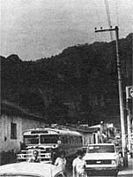

Though no one's happy about the recent devaluations of Mexico's peso (especially since that nation's problems may yet send out some far-reaching shock waves), the unpleasant state of affairs has resulted in some of the best south-of-the-border vacation bargains in years! And to lower transportation costs even more, you can take Martie Greenhoe Kaufman's advice and make use of that country's extensive and excellent bus system.
"You'll find both first- and second-class autobuses," Martie writes, "each with fixed, inexpensive fares. For example, at this time last year, a ticket from Villahermosa to Mexico City (a 16-hour trip) was less than $15, first class . . . Mexico City to Cuernavaca (1-1/2 hours) less than $1.25, first class . . . and Mexico City to Oaxaca (14 hours) less than $8.25, second class. It should be noted, though, that second-class accommodations tend to be cramped . . . so for trips longer than a couple of hours, you may want to spend the few extra pesos for a first-class bus. Either way, though, this sort of travel offers super opportunities to meet people . . . to improve your Spanish ... and to enjoy the country's truly magnificent scenery.
"Just keep a rough time frame in mind and follow a reasonable itinerary. (A good map and guide book will help.) At the same time, you'll enjoy yourself most if you're able to stay flexible. People who don't insist on 'being in Oaxaca by Tuesday', for example, will often find themselves actually anticipating the unscheduled adventures that will likely occur. You can avoid many delays, however, by making reservations for the next leg of your trip as soon as you get off the bus . . . especially if you plan to travel on a main route or over a weekend.
"Be aware, though, that different bus lines sometimes depart from different locations. (First- and second-class buses may leave from separate stations as well.) Fortunately, these tend to be within walking distance of each other . . . so if you can't get the reservations you want with one bus company, try the others. And consider taking overnight buses when traveling long distances: You not only save the cost of a night's stay in a hotel, but frequently discover that seats are easier to reserve and, occasionally, less expensive.
"Probably the biggest difficulty you'll encounter is finding a decent restroom. Those in bus stations are often somewhat unsanitary, but restaurant facilities may prove more acceptable. Make use, then, of any clean 'john' you come across, and do be sure to take along your own supply of toilet paper.
"Finally, be aware that Mexican driving practices may be different from those at home, and could seem downright suicidal to a first-time visitor. However, the drivers do value their own lives . . . so try to relax and enjoy the trip!"
Though it's a timesaver, jet travel often means spending a few post-flight days with your body's biological clocks sadly out of kilter. (We've noted that it takes approximately one day to recover from each time zone crossed.) Now, however, there's a four-day diet to help prevent such disorientation . . . developed by the Argonne National Laboratory. Here's what's involved.
On the third day before your flight, feast on a high-protein breakfast and lunch, followed by a dinner that's high in carbohydrates. During the second day before takeoff, "fast" with three small, light meals that are low in carbohydrates and total no more than 700 calories. The day preceding the trip is another feast day, while the day of travel itself is a fast day.
Whether you're feasting or fasting, drink caffeinated beverages only in the afternoon . . . with the following exceptions: When you're eastbound - say, on a flight from New York to London - drink several cups of coffee or tea the evening before departure and go to sleep only three or four hours before it'll be breakfast time at your destination. If you're westbound, ingest caffeine only in the morning on both the day of the flight and the day before it. When it's breakfast time at your destination, eat a high-protein meal without caffeine . . . stay active . . . eat a high-protein lunch and a high-carbohydrate dinner on your host country's schedule . . . and go to bed early. By the next morning, your body's clocks should be working with little or no lag.
For a free wallet-sized instruction folder, send a self-addressed, stamped envelope to Office of Public Information (Jet-Lag Diet), Argonne National Laboratory, Dept. TMEN, 9700 South Cass Avenue, Argonne, Illinois 60439.
Remember, you receive a free one-year subscription to MOTHER if your travel tip is published in this column. Write to Getting There, THE Mother Earth News (restricted) , 105 Storey Mountain Road Hendersonville, North Carolina 28791.
|
 |
|
|